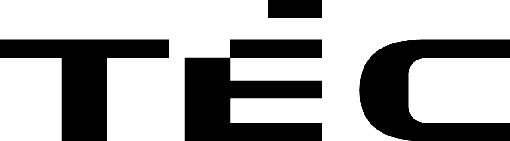

<div class="header">
  <div class="header-wrapper" id="header-wrapper">
    <!-- Sidebar button -->
    <button id="sidebar-btn" (click)="toggle_sidebar()">
      <i class="fa-solid fa-bars fa-fw"></i>
    </button>

    <!-- Logo -->
    

    <nav>
      <ul>
        <li><a routerLink="rapport">rapport</a></li>
        <li><a routerLink="documentation">documentation</a></li>
        <li><a routerLink="create">create</a></li>
      </ul>
    </nav>

    <!-- Searchbar container -->
    <div class="searchbar-container">
      <input type="text" id="search-input" placeholder="Search">
    </div>

    <div class="external-icon">
      <i class="fa-solid fa-sun fa-fw" (click)="toggle_theme()"></i>
      <div class="divider"></div>
      <i class="fa-brands fa-github fa-fw"></i>
    </div>
  </div>
</div>

<sidebar *ngIf="active" (output)="toggle_sidebar()"></sidebar>
